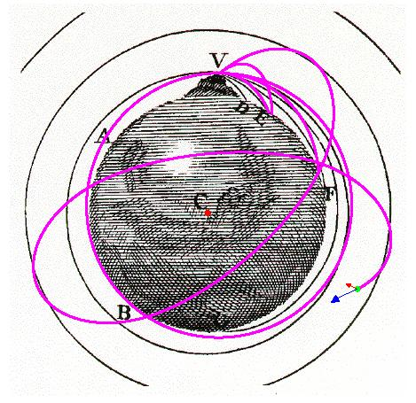

牛頓山
概述
這是描述一個拋射物從地球上很高的山發射的情形。模擬中顯示的圖表是源自牛頓 關於世界系統的論文，一篇繼原理之後，但基本關念相同的論文。 牛頓提到若發射一個具有足夠水平速度的拋射物，則拋射物會繞著地球轉而不會墜落。 因此這個拋射物在性質上並非完全異於月球繞著地球的行為。
這個模擬允許使用者用滑塊調整拋射物的初始速度和發射角度。拋射物由山頂發射（這座山異常的高，甚至會超出地球大氣層）。拋射物的運動路線是根據牛頓第二運動定律和牛頓重力場公式求得。
使用者可以選擇讓拋射物穿過地球。 此地球可設定成一個均質球體（預設值）或是在其球心的質點（可於選項中設定）。 均質球體看起來較真實，但質點模式較能看出運動的模式。
牛頓山
- 顯示選項選單
- 顯示地球中心：以紅色圓點標示出。
- 顯示速度向量：以藍色箭頭標示出速度向量。
- 顯示力量向量：以紅色箭頭標示出力量向量。（或是拋射物加速度）。
- 描繪拋射物路徑
- 顯示牛頓圖表：在背影中顯示牛頓圖表。
- 模擬選項選單
- 使拋射物通過地球：允許拋射物通過地球。
- 將地球視為質點：若未選取，將視地球為一個均質球體
- 介面
- 背景是一個源自關於世界系統的論文 的圖表。圖表上的線條表示拋射物或衛星（月亮）繞地球公轉。
- 藍色圓盤：拋射物。
- 紅色圓點：地球球心，標示"c"。
- 藍色箭頭：表示現在速度。
- 紅色箭頭：表示當上受力（或拋射物加速度）。
- 紅色路徑：物體路徑。
- 控制
- Play/Pause：啟動或暫停模擬。
- Step:以時間推進。
- Reset: 重設模擬。
- Clear Traces:清楚所有軌跡。
- Initialize:以設定的參數設置新的拋射物，不會影響原本的軌跡。
- Initial Speed: 設置初始速度 (公里/秒)。
- Launch Angle: 設置拋射物的初始角度(度)（以順時針方向）。
Todd K. Timberlake (ttimberlake@berry.edu)